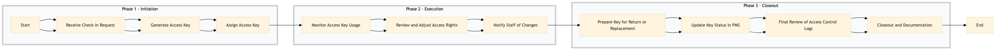

| Role | Steps |
|---|---|
| Front Desk Agent | 1.1 1.2 1.3 3.1 3.2 3.4 |
| Security Officer | 2.1 |
| Security Manager | 2.2 3.3 |
| Executive Housekeeper | 2.3 |
| Step | Name | Role | System | Input | Output | KPI | Dec? | Exc? | Pain Point / Risk |
|---|---|---|---|---|---|---|---|---|---|
| 1.1 | Receive Check-in Request | Front Desk Agent | Oracle OPERA Cloud | Guest reservation details | Check-in request acknowledged | Less than 2 minutes | N | Y | Handling last-minute check-ins with limited notice. |
| 1.2 | Generate Access Key | Front Desk Agent | Assa Abloy VingCard | Guest reservation details | Access key card | Less than 5 minutes | N | Y | Key card production delays due to system issues. |
| 1.3 | Assign Access Key | Front Desk Agent | Oracle OPERA Cloud | Access key card | Check-in confirmation with access key | Less than 2 minutes | N | Y | Ensuring the correct key is assigned to the right guest. |
| 2.1 | Monitor Access Key Usage | Security Officer | Honeywell INNCOM | Access logs | Usage report | Daily review within 30 minutes | Y | Y | Detecting unauthorized access attempts. |
| 2.2 | Review and Adjust Access Rights | Security Manager | Oracle OPERA Cloud, Assa Abloy VingCard | Usage report | Access rights updated | Less than 1 hour | N | Y | Balancing security with operational needs. |
| 2.3 | Notify Staff of Changes | Executive Housekeeper | Oracle OPERA Cloud, Book4Time | Access rights update notification | Acknowledged by staff | Less than 2 hours | N | Y | Ensuring all relevant staff are informed promptly. |
| 3.1 | Prepare Key for Return or Replacement | Front Desk Agent | Oracle OPERA Cloud, Assa Abloy VingCard | Check-out request | Key card returned or replacement scheduled | Less than 5 minutes | Y | Y | Handling lost or damaged keys. |
| 3.2 | Update Key Status in PMS | Front Desk Agent | Oracle OPERA Cloud | Key card status | PMS updated with key status | Less than 1 minute | N | Y | Ensuring accurate record-keeping. |
| 3.3 | Final Review of Access Control Logs | Security Manager | Honeywell INNCOM | Access logs for the stay | Final review report | Less than 1 hour | Y | Y | Identifying any potential security breaches. |
| 3.4 | Closeout and Documentation | Front Desk Agent | Oracle OPERA Cloud | Final review report | Access control documentation completed | Less than 1 hour | N | Y | Maintaining thorough and accurate records. |
This process ensures secure access control and key management at a Marriott full-service hotel, leveraging Oracle OPERA Cloud PMS and other integrated systems to manage guest and staff access efficiently.